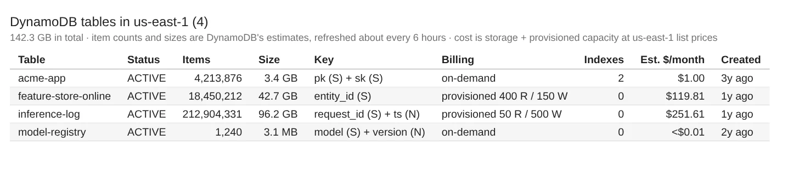
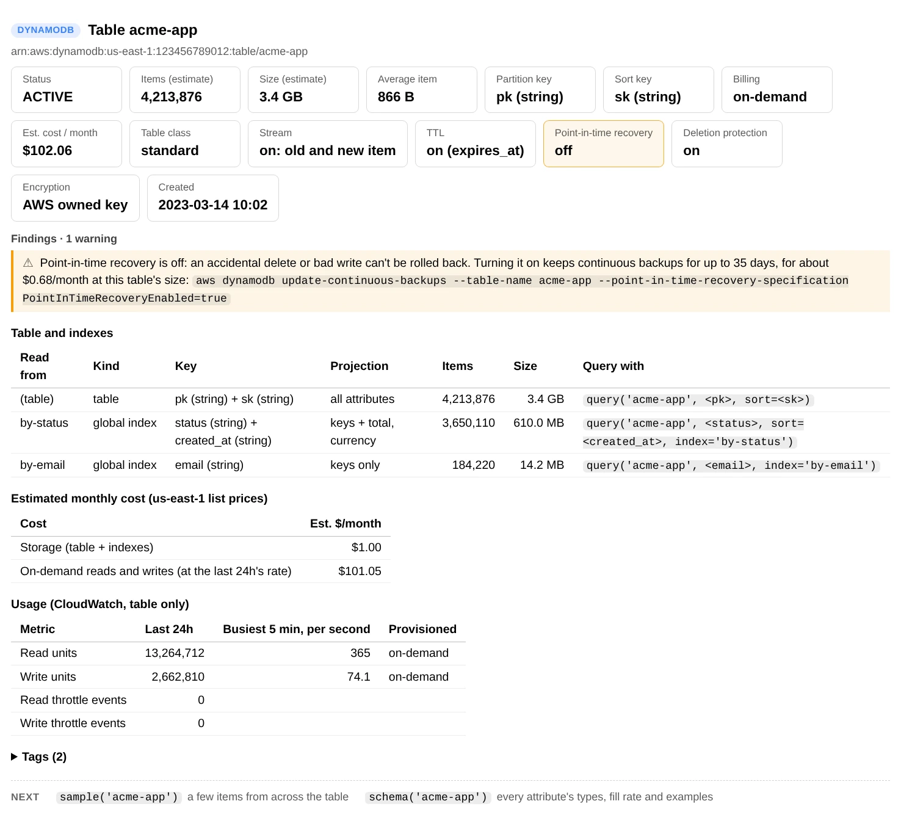
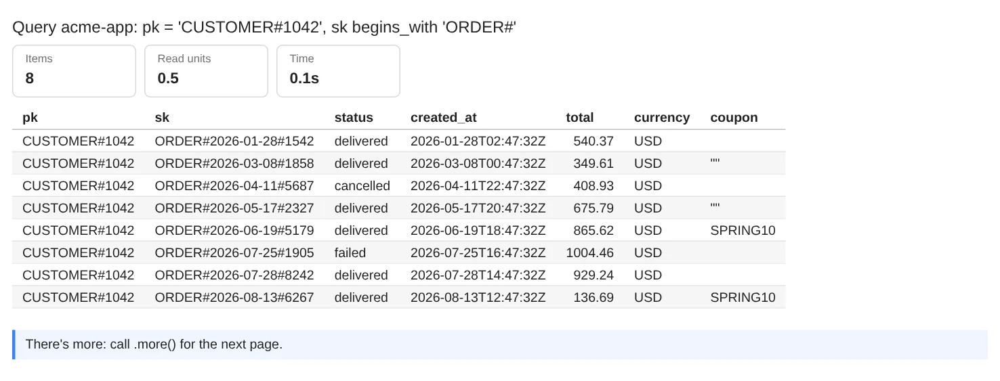
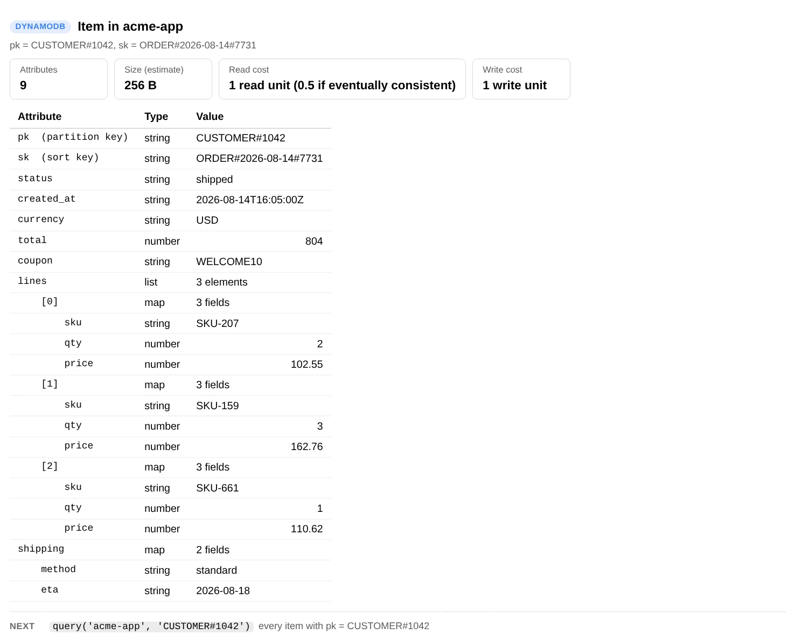
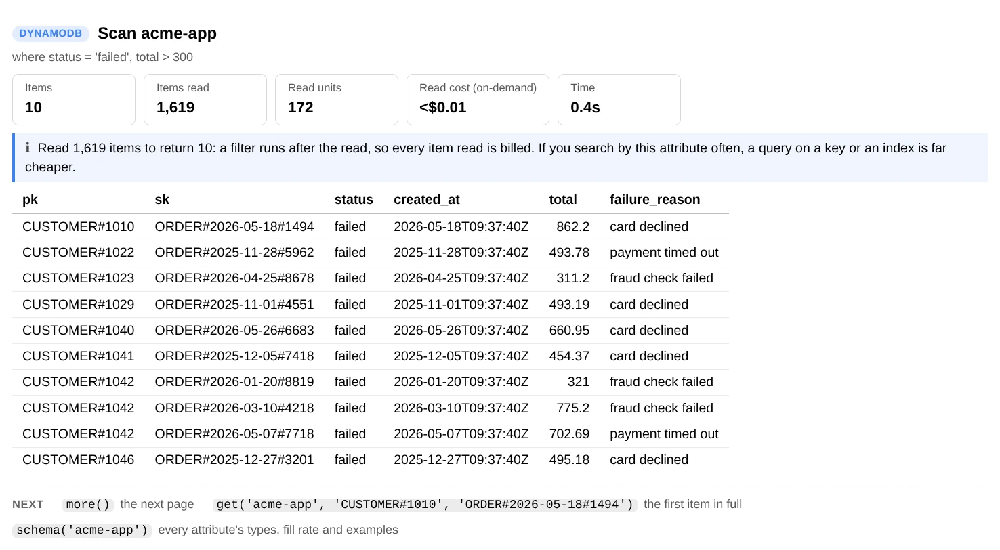
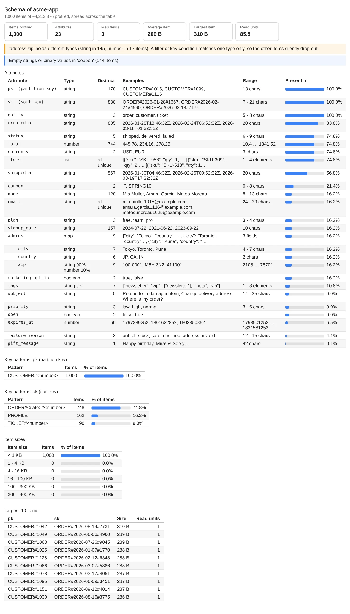
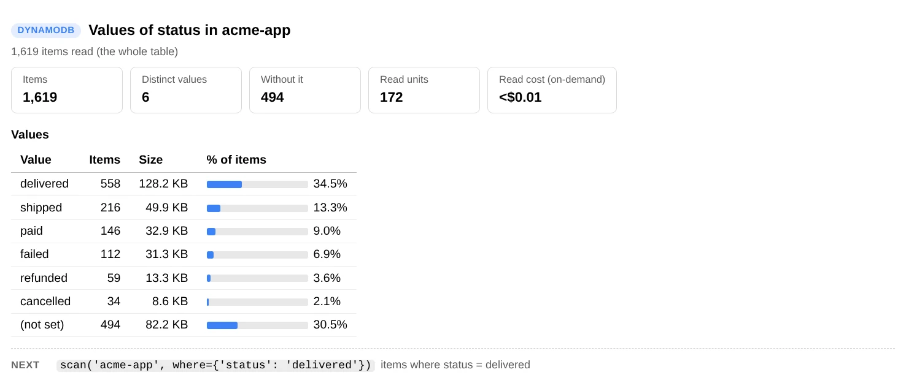

Contents
aws-analyzer · dynamodb.py
Explore your DynamoDB tables from a SageMaker notebook
One Python file. Drop it next to your notebook and read your tables the easy way: items as plain tables, one item with every nested field laid out, what attributes the items actually hold, and what each read costs, without leaving Jupyter.
- One file, boto3 only
- Read-only: never writes to a table
- Scans stop early by default
- Plain text outside Jupyter
Every example uses a table called acme-app, a single-table design that keeps customers (sk = "PROFILE"), their orders (sk = "ORDER#<date>#<id>") and support tickets under one partition key, CUSTOMER#<id>. Use your own table names. The screenshots are real output from the tool, run against demo tables with synthetic data.
Set up in SageMaker
-
Get
dynamodb.pynext to your notebook. Pick whichever works in your environment:- Upload it. Download dynamodb.py, then drag it into JupyterLab's file browser, in the same folder as your notebook.
- Fetch it from a cell, if the notebook can reach the internet:
!curl -sO https://raw.githubusercontent.com/utkarsh5026/aws-analyzer/main/analyzers/dynamodb.py - Copy it from S3, for a notebook with no internet access (VPC-only mode). Upload it to a bucket once, then:
!aws s3 cp s3://acme-ml-data/tools/dynamodb.py . - Or paste the whole file into a notebook cell and run it.
-
Import it and create the view. It uses the notebook's IAM execution role and region, so there's nothing to configure.
from dynamodb import DynamoDBView ui = DynamoDBView() # uses the notebook's IAM role and region ui.help() # every command, grouped by task; ui.help("scan") shows one in full -
Optional: another region or AWS profile, plain-text output, or longer tables. Tables are regional, so if
tables()comes back empty, check the region first.from dynamodb import DynamoDBAnalyzer, DynamoDBView ui = DynamoDBView(DynamoDBAnalyzer(region="eu-west-1", profile="dev")) ui = DynamoDBView(mode="text") # plain text, e.g. in a terminal or a script ui = DynamoDBView(max_columns=0) # show every attribute side by side (default: 30) ui = DynamoDBView(progress="plain") # a plain progress line on long scans instead of tqdm bars ("off": none)
Only boto3 is required. pandas (preinstalled on SageMaker) is used only when you ask for a DataFrame.
Five-minute tour
The commands you'll use most. Each one prints a report under the cell; none of them change anything.
ui.tables() # every table: key, items, size, billing, cost
ui.table_info("acme-app") # indexes and how to query each, usage, backups, risks
ui.scan("acme-app") # the first 20 items as a table...
ui.more() # ...and the next 20
ui.query("acme-app", "CUSTOMER#1042") # everything stored under one partition key
ui.get("acme-app", "CUSTOMER#1042", "PROFILE") # one item, nested fields laid out
ui.schema("acme-app") # which attributes the items hold, and their types
df = ui.core.scan("acme-app", n=5000).to_df() # a pandas DataFrameReading a report. Every report puts the answer first: cards with the numbers that matter (a card turns amber or red when a finding is about it), then the findings, warnings first, each ending in what to do. The tables of detail come after, with status cells such as FAILED in colour, and at the bottom a Next row of two or three commands with the arguments filled in from this report, such as get('acme-app', 'USER#42', 'ORDER#0017'). One click on a command anywhere in a report, or on a code block, selects all of it, ready to copy. ui.help() lists every command by task; ui.help("scan") shows one in full.
Items come back as plain Python, not DynamoDB JSON: numbers are int or float (not Decimal), sets are sets, binary is bytes, and maps and lists are dicts and lists. A key value is converted to the key's type, so "42" works for a number key.
Your tables
Every table at a glance
tables() describes every table in the region in parallel: status, item count, size, key, billing mode, number of indexes, and estimated monthly cost for storage and provisioned capacity. It reads no items, so it's instant however big the tables are.
ui.tables()
ui.tables(): item counts and sizes are DynamoDB's own estimates, which it refreshes about every 6 hours.One table in detail
table_info() shows the keys and their types, and every index with its key, what it projects, and the query(...) call that reads it. It adds the last 24 hours of usage from CloudWatch (read and write units, the busiest 5 minutes, throttling), TTL, the stream, point-in-time recovery, deletion protection, encryption and tags. Then it flags what's risky or wasteful: no point-in-time recovery, throttled requests, provisioned capacity far above or close to what's used.
ui.table_info("acme-app")
ui.table_info("acme-app", hours=24 * 7) # a week of usage
ui.table_info("acme-app", metrics=False) # skip CloudWatch
ui.table_info("acme-app"): for an on-demand table the monthly cost includes reads and writes at the last 24 hours' rate.Look at items
Scan and page through
scan() shows items from the start of the table as a table: key attributes first, then the other attributes by how many items have them, and nested maps as address.city columns. A missing attribute is a blank cell, and an empty string shows as "", so you can tell them apart. more() continues exactly where the last page stopped.
ui.scan("acme-app") # first 20 items
ui.more() # next 20; works after scan, query and sql
ui.scan("acme-app", n=50, attributes=["status", "total"]) # only some attributes (keys are always included)
ui.scan("acme-app", index="by-status") # read an index instead of the table
ui.sample("acme-app", 20) # 20 items spread across the whole tableThe start of a table can all belong to a handful of partition keys, so for a first look at what a table holds, sample() is better: it reads a few items from each of many slices of the key space, in parallel.
Everything under one partition key
query() reads the items that share a partition key, in sort-key order. sort= narrows the sort key with a value or a condition, index= queries a secondary index, and descending=True starts from the highest sort key (the newest, for date-based keys).
ui.query("acme-app", "CUSTOMER#1042") # profile, orders and tickets
ui.query("acme-app", "CUSTOMER#1042", sort=("begins_with", "ORDER#")) # just the orders
ui.query("acme-app", "CUSTOMER#1042", sort=("between", "ORDER#2026-06", "ORDER#2026-09"))
ui.query("acme-app", "CUSTOMER#1042", sort=("begins_with", "ORDER#"), descending=True, n=5) # latest 5
ui.query("acme-app", "failed", index="by-status") # on a global index
ui.query("acme-app", "CUSTOMER#1042", sort=("begins_with", "ORDER#"), n=8, attributes=["status", "created_at", "total", "currency", "coupon"])One item, every field
get() reads one item by its key and lays it out as a tree: every attribute with its DynamoDB type, maps and lists of maps expanded underneath, long text on several lines. It also shows the item's size and what it costs to read and write. Pass the key values in order, or a dict.
ui.get("acme-app", "CUSTOMER#1042", "ORDER#2026-08-14#7731")
ui.get("acme-app", {"pk": "CUSTOMER#1042", "sk": "PROFILE"})
ui.get("acme-app", "CUSTOMER#1042", "PROFILE", as_json=True) # add a JSON copy
ui.get("acme-app", "CUSTOMER#1042", "ORDER#2026-08-14#7731")PartiQL
If you'd rather write SQL, sql() runs a PartiQL statement. ? placeholders are filled from the extra arguments, in order.
ui.sql('SELECT * FROM "acme-app" WHERE pk = ?', "CUSTOMER#1042")
ui.sql('SELECT pk, sk, total FROM "acme-app"."by-status" WHERE status = ?', "failed")A SELECT without the partition key in its WHERE clause scans the whole table, and you pay for every item it reads.
Filter items
where= works on scan, query, sample, schema, value_counts, largest and count. It takes a dict, and every condition must match:
where= | Means |
|---|---|
{"status": "failed"} | status equals "failed" |
{"total": (">", 100)} | Also "=", "!=", "<", "<=" and ">=" |
{"total": ("between", 10, 100)} | Both ends included |
{"sk": ("begins_with", "ORDER#")} | Starts with |
{"tags": ("contains", "vip")} | A substring, or a member of a set or list |
{"status": ("in", ["pending", "failed"])} | Any of these values |
{"shipped_at": ("not_exists",)} | The attribute is missing. Also ("exists",), and ("type", "N") to check the stored type |
{"address.city": "Pune"} | Dots reach into maps |
For OR and NOT, pass a boto3 condition instead: where=Attr("status").eq("failed") | Attr("total").gt(500), with from boto3.dynamodb.conditions import Attr.
ui.scan("acme-app", 10, where={"status": "failed", "total": (">", 300)},
attributes=["status", "created_at", "total", "failure_reason"])
If you search by an attribute often, a query on a key or a global index is far cheaper than a filtered scan. A filtered ui.scan reads at most 100,000 items per page (scan_limit=); more() continues from there.
What the items look like
DynamoDB doesn't store a schema, so schema() works one out from about 1,000 items spread across the table. For every attribute, and every field inside a map, it shows:
- its type, or the mix of types when items disagree;
- how many items have it;
- how many distinct values it takes, a few examples, and the range of numbers or lengths.
The key patterns turn key values into shapes, such as ORDER#<date>#<number>, so the entity types of a single-table design stand out. Findings point at data problems: one attribute stored with different types, empty strings, items close to the 400 KB limit, and attribute names built from data.
ui.schema("acme-app")
ui.schema("acme-app", where={"sk": ("begins_with", "ORDER#")}) # just the orders
ui.schema("acme-app", n=5000, max_depth=3) # more items, deeper maps
ui.schema("acme-app"): an old import stored some US zip codes as numbers, so a filter on address.zip silently misses them.Values and sizes
value_counts() counts each value of an attribute, with the size of the items that hold it. On the partition key, each count is the size of one item collection, so hot or oversized partitions stand out. It reads the first 10,000 items unless you pass limit=None.
ui.value_counts("acme-app", "status")
ui.value_counts("acme-app", "address.country") # dots reach into maps
ui.value_counts("acme-app", "pk", limit=None) # items per partition key, whole table
ui.value_counts("acme-app", "status"): “(not set)” is customers and tickets, which have no status.ui.largest("acme-app") # the 10 biggest items, by DynamoDB's sizing rules
ui.count("acme-app", where={"status": "pending"}) # exact count: a full scan
ui.count("acme-app") # next to DynamoDB's own estimateUse the data in Python
Every report has a data version on ui.core (a DynamoDBAnalyzer) that returns dataclasses, dicts and DataFrames instead of printing.
ddb = ui.core
page = ddb.scan("acme-app", n=5000, where={"status": "failed"}) # ItemPage
page.items # list of plain dicts
df = page.to_df() # DataFrame: keys first, nested maps as address.city
page.stats.scanned, page.stats.read_units # what the read cost
next_page = ddb.scan("acme-app", n=5000, where={"status": "failed"}, start_key=page.last_key)
orders = ddb.query("acme-app", "CUSTOMER#1042", sort=("begins_with", "ORDER#"), n=None).to_df()
ddb.get("acme-app", "CUSTOMER#1042", "PROFILE") # dict, or None
ddb.sample("acme-app", 500).items # spread across the table
profile = ddb.profile("acme-app", 2000) # TableProfile, what schema() shows
profile.attributes["address.zip"].types # Counter({'S': 145, 'N': 17})
profile.to_df() # one row per attribute
ddb.value_counts("acme-app", "status").counts # {'delivered': Stat(count=..., size=...), ...}
ddb.count("acme-app", where={"status": "failed"}).matched
ddb.describe("acme-app") # TableInfo: keys, indexes, capacity, TTL, backups, tags
ddb.table_metrics("acme-app", hours=24) # consumed units, busiest period, throttles
for item in ddb.iter_items("acme-app", limit=None): # stream a full scan without holding it in memory
passThe analysis functions don't call AWS, so they also work on items you already have, for example a DynamoDB export to S3. Read the export with s3.py and profile it without touching the table:
from dynamodb import from_dynamo_item, items_to_df, profile_items
from s3 import S3Analyzer
rows = S3Analyzer().read_jsonl("s3://acme-ml-data/exports/AWSDynamoDB/01234-abcd/data/part.json.gz")
items = [from_dynamo_item(row["Item"]) for row in rows]
profile_items(items, keys=["pk", "sk"]).to_df()
items_to_df(items, keys=["pk", "sk"])Also pure: to_dynamo, flatten_item, count_values, item_size, key_pattern, build_filter, table_findings, profile_findings, table_monthly_cost and request_cost.
Large tables and cost
Start without reading items
tables() and table_info() use DynamoDB's own counts and sizes and CloudWatch's usage, so they take seconds on any table.
Scans stop early
Every item a scan reads is billed and uses the table's capacity. value_counts and largest read 10,000 items and schema about 1,000; pass limit=None to read everything.
Queries are cheap
A query reads only one partition key's items. Prefer it, or a global index, to a filtered scan.
count reads everything
It returns no items, but still reads and pays for all of them. The estimate in tables() is free.
Every report shows the read units it used. Costs are estimates at us-east-1 list prices for the standard table class, before the free tier (DYNAMODB_PRICES): storage, provisioned capacity and point-in-time recovery per month, and on-demand reads and writes per million. For another region, pass your prices:
ui = DynamoDBView(DynamoDBAnalyzer(prices={"storage": 0.285, "read_request": 0.1425, "write_request": 0.7125}))Permissions
Everything is read-only. Anything the notebook's role can't read shows up as a note (or a ? on a card) instead of an error, so you can start with less and add what you need. This policy covers every command:
{
"Version": "2012-10-17",
"Statement": [
{
"Sid": "ListTables",
"Effect": "Allow",
"Action": "dynamodb:ListTables",
"Resource": "*"
},
{
"Sid": "ReadTables",
"Effect": "Allow",
"Action": [
"dynamodb:DescribeTable", "dynamodb:Scan", "dynamodb:Query", "dynamodb:GetItem",
"dynamodb:PartiQLSelect", "dynamodb:DescribeTimeToLive", "dynamodb:DescribeContinuousBackups",
"dynamodb:ListTagsOfResource"
],
"Resource": ["arn:aws:dynamodb:*:*:table/*", "arn:aws:dynamodb:*:*:table/*/index/*"]
},
{
"Sid": "ReadUsage",
"Effect": "Allow",
"Action": "cloudwatch:GetMetricData",
"Resource": "*"
}
]
}To scope it down, replace table/* with your tables, for example arn:aws:dynamodb:us-east-1:123456789012:table/acme-app and …:table/acme-app/index/*. A table encrypted with a customer managed KMS key also needs kms:Decrypt on that key.
Troubleshooting
“ResourceNotFoundException: table not found”
Table names are case-sensitive, and tables are regional: the notebook's region may not be the table's. Use DynamoDBView(DynamoDBAnalyzer(region="eu-west-1")).
A query returns nothing, but the item exists
Keys are typed. "42" (a string) and 42 (a number) are different keys. The tool converts what you pass to the key's declared type, but a filter on an ordinary attribute can't know what type you meant. schema() shows which types each attribute really holds.
A card shows “?” or a note says “Couldn't read … (AccessDeniedException)”
The notebook's role is missing that permission. The rest of the report still works. Compare the role with the policy above.
“No reads or writes recorded in CloudWatch”
The table had no traffic in that window, or the role can't call cloudwatch:GetMetricData. Try ui.table_info(name, hours=24 * 7), or metrics=False to skip CloudWatch.
The item count in tables() doesn't match count()
DynamoDB refreshes the item count and size it reports about every 6 hours. count() is exact because it reads every item.
The report lost its formatting after I reopened the notebook
JupyterLab strips the report's styles from saved output when a notebook is reopened. Run the cell again to get the formatted report back.
Command reference
Every DynamoDBView command. ui.help() prints the same list grouped by task, and ui.help("scan") shows one command's full description.
| Command | What it shows |
|---|---|
tables() | Every table in the region: key, items, size, billing, indexes, estimated cost |
table_info(table, metrics=True, hours=24) | Keys, indexes and how to query each, capacity, usage, TTL, backups, encryption, tags, cost, risks |
scan(table, n=20, where=, index=, attributes=, scan_limit=100_000) | Items from the start of the table or an index |
query(table, partition, sort=None, n=20, where=, index=, attributes=, descending=False) | Items sharing one partition key, in sort-key order |
sample(table, n=20, where=, index=, attributes=) | Items spread across the whole table |
more() | The next page of the last scan, query or sql |
get(table, *key, as_json=False) | One item as a tree, with its size and read and write cost |
sql(statement, *parameters, n=50) | A PartiQL statement |
schema(table, n=1000, where=, index=, spread=True, max_depth=2) | Attributes, types, fill rate, examples, ranges, key patterns, item sizes, findings |
value_counts(table, attribute, limit=10_000, where=, index=, top=30) | How often each value occurs, and the size of those items |
largest(table, n=10, limit=10_000, where=, index=) | The biggest items |
count(table, where=, index=) | Exact item count, next to DynamoDB's estimate |
help(command=None) | This list, grouped by task; help("name") shows one command in full |